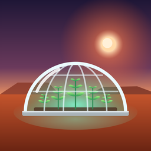

Red Dust
Son güncelleme / Last updated: 6 Kasım 2026 / 6 November 2026
Gizlilik Politikası
Red Dust, Mars'ta koloni kurduğun bir oyundur. Bu sayfa hangi bilgileri neden tuttuğumuzu anlatır. Kısaca: analiz aracı kullanmıyoruz, bilgilerini satmıyoruz. İsteğe bağlı ödüllü videolar Google AdMob üzerinden gösterilir (aşağıda).
Telefonunda kalanlar
Kolonin (binalar, ürünler, kaynaklar, ilerleme) ve ayarların yalnızca telefonunda saklanır. Bizim sunucumuza gönderilmez.
Profil oluşturursan sunucuda tutulanlar
Arkadaşlar özelliği isteğe bağlıdır. Profil oluşturursan şunları saklarız:
- Seçtiğin ad ve simge, sana verilen arkadaş kodu
- Hesap açarsan kullanıcı adın, şifren ve kurtarma kodun (şifre ve kod tek yönlü şifrelenmiş olarak, düz metin olarak asla tutulmaz)
- Arkadaşlarına gösterilen koloni seviyesi, nüfus ve dönüşüm yüzdesi
- Arkadaş listen, arkadaşlık istekleri, gönderdiğin ve aldığın hediyeler ve yardım istekleri, engellediğin oyuncular
- Son görülme zamanı ve oturum anahtarları
- Bir oyuncuyu bildirirsen bildirim kaydı
Biz e-posta adresini, telefon numaranı, konumunu ya da kişilerini istemez ve toplamayız.
Neden
Bu bilgiler yalnızca arkadaş ekleme, hediye gönderme, yardım isteme, giriş yapma ve uygunsuz adları denetleme için kullanılır.
Reklamlar ve satın almalar
Mağazadaki "Kısa bir video izle" düğmesine basarsan Google AdMob bir video reklam gösterir. Google bunun için cihazın reklam kimliğini (yalnızca izin verirsen), IP adresini ve reklamla etkileşimini işleyebilir. Kişiye özel reklam yalnızca izin verdiğinde gösterilir; Avrupa'daki oyunculara ayrıca onay formu çıkar ve bu seçim Ayarlar → "Reklam gizlilik seçenekleri"nden değiştirilebilir. Ayrıntılar: Google'ın gizlilik politikası.
Satın almalar tamamen Apple tarafından işlenir. Ödeme bilgilerini görmeyiz; sadece satın alınan paketi oyununa ekleriz.
Nerede
Bilgiler Supabase altyapısında, Avrupa Birliği'ndeki (Frankfurt, Almanya) sunucularda tutulur ve bağlantılar şifrelidir (HTTPS).
Ne kadar süre
Profilin sen silene kadar tutulur. Oyunda Arkadaşlar → Düzenle → "Profilimi ve arkadaş listemi sil" ile profilini, arkadaşlarını, hediyelerini ve isteklerini hemen silebilirsin. Bildirim kayıtları denetim için 12 aya kadar tutulabilir; silinen hesapla bağı kaldırılır.
Çocuklar
Profil oluşturmak zorunlu değildir; oyun profilsiz de tamamen oynanabilir. Arkadaşlar yalnızca birbirinin kodunu bilerek eklenebilir, oyunda serbest sohbet yoktur.
Hakların
Bilgilerine erişme, düzeltme ve silme hakkın vardır (KVKK ve GDPR). Profil adını oyunda değiştirebilir, profilini oyunda silebilirsin. Diğer talepler için bize yaz.
İletişim
Bu politika değişirse bu sayfadaki tarih güncellenir.
Privacy Policy
Red Dust is a game about building a colony on Mars. This page explains what we keep and why. In short: we use no analytics and we never sell your information. Optional reward videos are shown through Google AdMob (see below).
What stays on your phone
Your colony (buildings, crops, resources, progress) and your settings are stored only on your phone. They are not sent to our server.
What we keep on the server if you make a profile
Friends are optional. If you make a profile we store:
- The name and picture you pick, and your friend code
- If you create an account: your username, password and recovery code (password and code are stored only as one-way hashes, never as plain text)
- Your colony level, population and terraforming percentage, shown to your friends
- Your friends list, friend requests, gifts and help requests you send and receive, and players you block
- When you were last online, and session keys
- Reports you make about other players
We do not ask for or collect your email address, phone number, location or contacts.
Why
Only to let you add friends, send gifts, ask for help, log in, and to moderate offensive names.
Ads and purchases
If you tap "Watch a short video" in the shop, Google AdMob shows a video ad. To do this, Google may process your device's advertising identifier (only with your permission), IP address and how you interact with the ad. Personalized ads are shown only if you allow them; players in Europe also see a consent form and can change their choice in Settings → "Ad privacy choices". Details: Google's privacy policy.
Purchases are handled entirely by Apple. We never see your payment details; we only add the pack you bought to your game.
Where
Data is stored with Supabase on servers in the European Union (Frankfurt, Germany). All connections are encrypted (HTTPS).
How long
Until you delete your profile. In the game, Friends → Edit → "Delete my profile and friends list" deletes your profile, friends, gifts and requests right away. Reports may be kept for up to 12 months for moderation, unlinked from deleted accounts.
Children
A profile is not required; the whole game can be played without one. Friends can only be added by knowing each other's code, and there is no free chat.
Your rights
You can access, correct and delete your data (GDPR and Turkish KVKK). You can change your name and delete your profile in the game. For anything else, write to us.
Contact
If this policy changes, the date at the top of this page is updated.